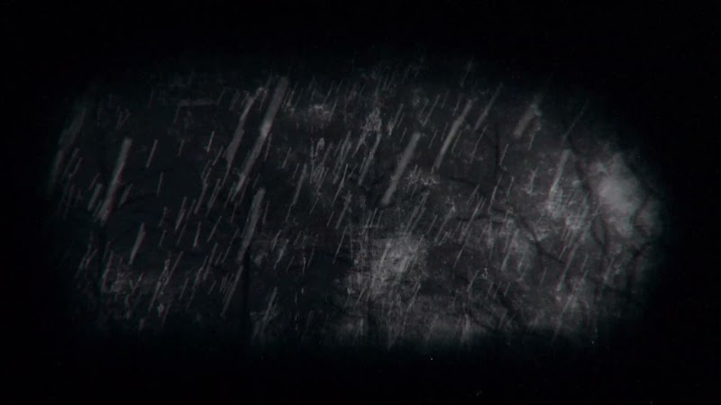
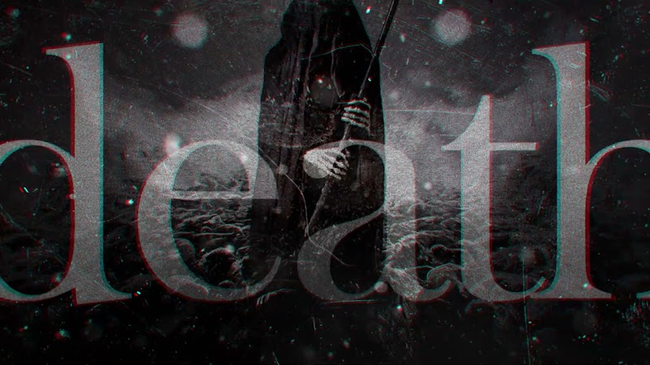
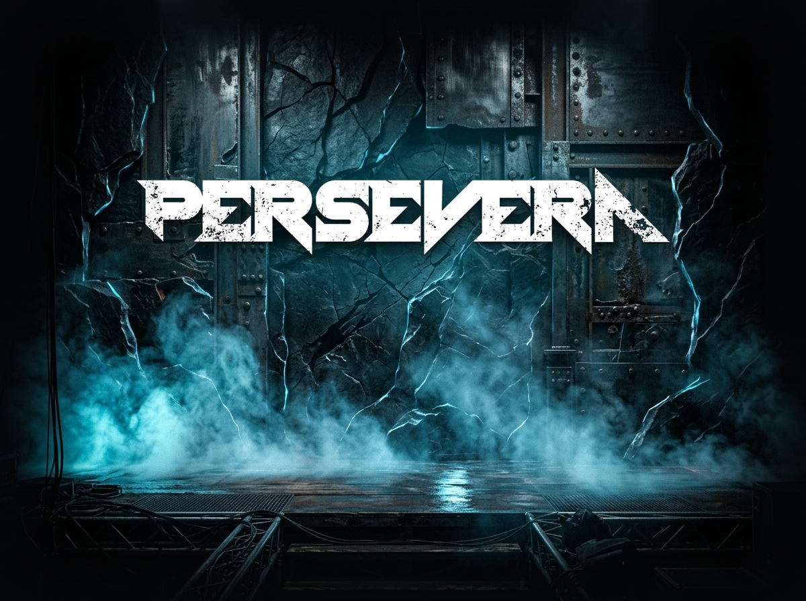

Crushing riffs, razor-sharp solos and towering vocals. Forged in the noble tradition of classic Heavy Metal and contemporary Groove.
The raw power and intensity of three guitars.
THE SOUND OF PERSEVERA
Listen to exclusive tracks directly in our official player or stream on your favorite digital platform.
PERSEVERA ON STREAMING
Stream the full discography, add songs to your favorites and follow Persevera on Spotify and YouTube.
OFFICIAL MUSIC VIDEOS
Watch cinematic music videos and high-definition studio performances produced by the band.
Broken World
Single marcante com videoclipe oficial gravado com a formação reunida.
 CLIPE OFICIAL
CLIPE OFICIAL
Broken World
Official Music Video CLIPE OFICIAL
CLIPE OFICIAL
To the Unknown
Official Music Video
CLIPE ANIMADOThe White Rider
Clipe Animado Oficial • Apocalipse I
CLIPE ANIMADODeath
Clipe Animado Oficial • Apocalipse IVThe Last Horseman
Clipe Animado Oficial • Conclusão SABBATH COVER
SABBATH COVER
Selling My Soul
Black Sabbath Tribute METALLICA COVER
METALLICA COVER
Sad But True
Metallica Tribute 01 • GENESIS
01 • GENESIS
Iced Hell
Lyric Video • Genesis 01 02 • GENESIS
02 • GENESIS
Oh Lord!
Lyric Video • Genesis 02 03 • GENESIS
03 • GENESIS
A Waste of Time
Lyric Video • Genesis 03 04 • GENESIS
04 • GENESIS
My Curse
Lyric Video • Genesis 04 05 • GENESIS
05 • GENESIS
King of Kings
Lyric Video • Genesis 05 06 • GENESIS
06 • GENESIS
The Flail of God
Lyric Video • Genesis 06 07 • GENESIS
07 • GENESIS
Down from the Sky
Lyric Video • Genesis 07 08 • GENESIS
08 • GENESIS
The Countdown
Lyric Video • Genesis 08 09 • GENESIS
09 • GENESIS
The White Rider
Lyric Video • Genesis 09 10 • GENESIS
10 • GENESIS
The Red Horse
Lyric Video • Genesis 10 11 • GENESIS
11 • GENESIS
Famine
Lyric Video • Genesis 11 12 • GENESIS
12 • GENESIS
Death
Lyric Video • Genesis 12 13 • GENESIS
13 • GENESIS
The Last Horseman
Lyric Video • Genesis 13A BANDA PERSEVERA
Conheça os músicos, a trajetória e a proposta autêntica de Heavy Metal da Persevera.

THE MIGHT OF PURPOSE-DRIVEN METAL
Formed in Sumaré, state of São Paulo, Brazil, PERSEVERA was born with the mission to revive the raw grit and melodic nobility of classic Heavy Metal, fusing the timeless drive of the '80s and '90s with modern Groove Metal aggression.
Following the consolidation of the acclaimed conceptual album Genesis (2023), the band expanded its lineup to the iconic three-guitar attack, delivering rich harmonies, massive rhythm foundations and intertwined solos with unique vigor.
THE BAND'S HISTORY
From 25 songs forged in isolation on loop pedals to the thunderous live impact of three guitars.
"I wanted a name that wasn't a metal cliché, something that evoked perseverance — the resilience to never surrender in the face of adversity and the determination to forge an enduring musical body of work capable of standing the test of time."— Danilo Bredda, in press interviews
The Solitary Genesis & 25 Tracks on the Loop Station
Persevera's story began far from the spotlight through pure passion for Heavy Metal. Guitarist Danilo Bredda spent years crafting riffs, melodies and full arrangements using only his guitar connected to loop station pedals. Upon completing the 25th instrumental track, he decided this body of work needed a professional studio recording.
The Gathering & The Band Family
To give voice and substance to the songs, Danilo invited his cousin Paulo Carrara to take over lead vocals. Paulo embraced the project and introduced two foundational pillars: bassist Thadeu Castro, an improvisational maestro, and drummer Claudio Lima, whose studio in Sumaré became the band's creative and recording headquarters.
Concept Album 'Genesis' & The Apocalypse Saga
The 25 original tracks were divided into two complete albums. The debut, Genesis (13 tracks), was released track by track with cinematic music videos on YouTube. The album captivated fans and critics with the Four Horsemen tetralogy (The White Rider, The Red Horse, Famine, Death) culminating in The Last Horseman. Its success sparked a partnership with MS Metal Agency Brasil for physical CD distribution nationwide.
The Triple Guitar Attack: Arrival of Leandro Pieroni & Luiz Fernando
To push their sound to new heights of heaviness and melodic complexity, Persevera enlisted two accomplished guitarists and longtime friends: Leandro Pieroni and Luiz Fernando. Adopting the rare three-guitar frontline (reminiscent of Iron Maiden and Helloween), the music gained three-part harmonies, intertwined leads and a dense sonic wall.
New Frontman, Sophomore Album & Stage Onslaught
In September 2026, Persevera inaugurated a fierce new chapter with the arrival of powerful lead vocalist Luiz Carlos, taking over the helm following Paulo Carrara's memorable tenure on the Genesis debut. The band is currently tracking their 12-song sophomore album in studio — featuring blistering tracks like Broken World, To the Unknown, For the Ancient One, The Chosen Son and For the Greater Good —, preparing an unstoppable live tour fueled by their three-guitar attack.
PERSEVERA IN SPECIALIZED PRESS
BAND MEMBERS
Luiz Carlos
Lead VocalsCommanding frontman with an explosive heavy metal vocal range, delivering searing aggressive grit, towering anthemic hooks, and visceral power leading Persevera's new chapter.
Danilo Bredda
GuitarsHeavy structural riffs, creative mastermind and songsmith behind the Persevera sonic universe.
Claudio Lima
Drums & StudioSurgical and explosive drumming, piloting tracking, engineering and mixing in the studio.
Thadeu Castro
BassVeteran bass wizardry delivering the pounding, groove-laden rhythmic backbone of every composition.
Luiz Fernando
GuitarsHeavy bluesy drive, fiery leads and rich harmonic arrangements completing the guitar trio.
Leandro Pieroni
GuitarsVirtuosic solos, cutting tone and soaring melodic phrasing fueling the massive wall of guitars.
BEHIND THE SCENES
Unfiltered black-and-white footage from studio tracking, rehearsals, arrangements and the creative forge of Persevera.
Broken World — Studio Session
Unfiltered black-and-white studio footage capturing the recording sessions of 'Broken World'.
GET IN TOUCH WITH PERSEVERA
Festival booking, venue inquiries, press interviews and partnerships.
OFFICIAL CHANNELS
Stream our music, watch official videos, connect on social media or reach out directly.